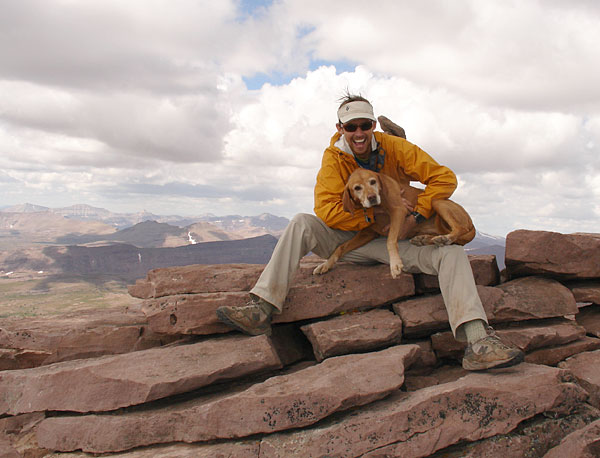
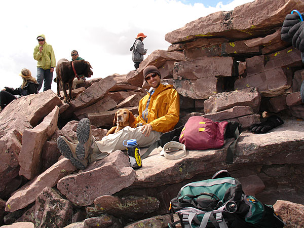

|
As I suddenly found myself at Labor Day
weekend without a single thing to do, I headed off to King's Peak,
where a co-worker and her boyfriend were backpacking. I figured that
if I timed it right, I could find their camp just in time for tequila
hour.

Here I am giving Star Child a celebratory noogie
on top of Kings Peak. It was eerily lonesome uptop the desolate summit,
as if I had passed
into a zone where Humans are not permitted.

Actually, the summit was a major labor day weekend
party zone. If you weren't careful, you'd end up being photographer for
the other euphoric peak-baggers. Several folks asked me to take a series
of
group pictures with an assortment of poses and
cameras. Then, before I could run away, I was asked to pose
with Star Child with a yet another group of beaming, shivering strangers.
Probably the most amazing thing I heard was someone say, "sea level
yesterday, on top of Kings Peak today!".
We had hiked for 14
hrs by 6:00 Saturday evening. We were both totally
spent. Star Child, walking as if she was wearing lead booties
on each
paw, was
even too tired
to eat. We snuggled through a couple night storms and some suprisingly
low temperatures. The monday sun was a welcome event, providing me
with the first warmth of the weekend, perfect for the final couple hours
back to the trail head.
|